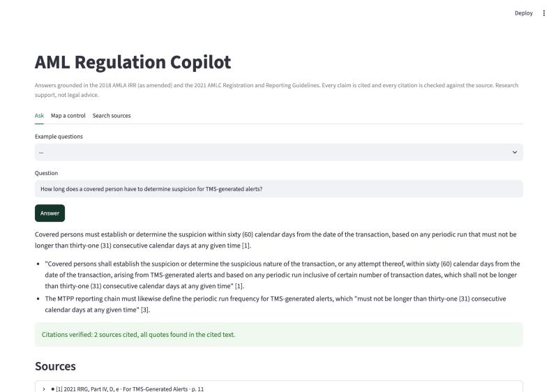
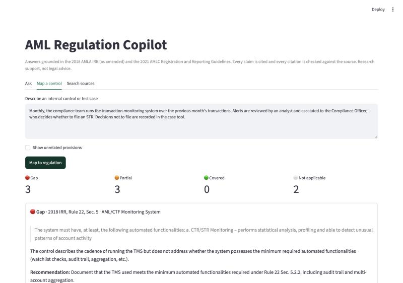
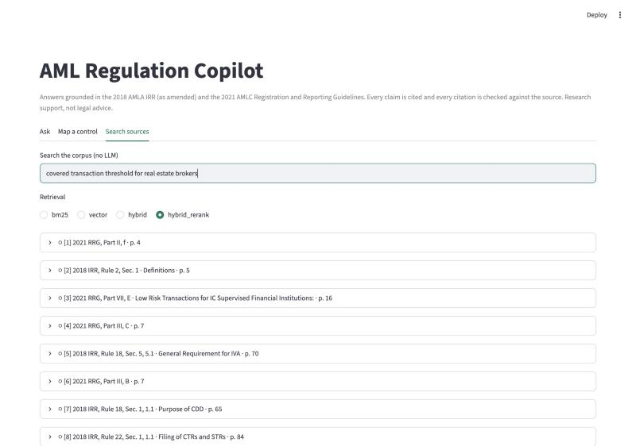

Answers you can audit
A pilot compliance copilot for AMLC rules. Every claim cites its provision and is checked before you see it.
The pilot answers 0% of test questions correctly and refuses every question its sources cannot answer
In compliance, a fluent answer that cites superseded law is an audit finding
Covered-transaction threshold in the original Act. Still the first result for many searches, and no longer the rule.
The threshold a covered person must apply today. The copilot only answers from the current text.
Traceable
Every statement points to a provision and page an auditor can open.
Current
Superseded wording never reaches the model as if it were law.
Silent when unsure
If the sources do not say it, the copilot declines instead of guessing.
One grounded pipeline powers three tools for compliance analysts



Only one of five stages calls the language model; the other four are deterministic code
Ingest
Downloads each source, records its SHA-256, drops superseded footnotes, chunks by Rule and Section.
Index
Keyword and semantic indexes over 364 citable chunks, all local.
Retrieve
Fuses both rankings, then a cross-encoder reranks the top 30 down to 6.
Answer
Writes from the six numbered excerpts only, cites every claim or replies NOT_IN_SOURCES.
Verify
Checks every citation exists and every quote appears in the block it cites.
Keeping the model to a single stage makes the system testable: retrieval and verification are measured without it, and the model can be swapped without touching anything else.
The parser follows the regulation's own hierarchy, so every chunk has an address an auditor can check
10pt footnotes quote the wording before each amendment. The parser keeps only body text at 11.5pt and above.
Hybrid search with reranking puts the right provision in the top 3 for 49 of 50 questions
Why hybrid
Keywords catch exact terms like "ZSTR" or "PHP 500,000"; vectors catch paraphrases like "TMS alerts" for "transaction monitoring". Fusion keeps both.
Why rerank
A cross-encoder reads question and provision together. It lifts the first-ranked hit from 82% to 90% correct.
How it was scored
Each question was labelled with the provision that answers it before any results were seen.
Structure-aware chunks match fixed windows on recall while sending the model 53% less text
Words handed to the model per question (top 5 chunks)
| Answer-bearing text found | Fixed | Structured |
|---|---|---|
| Ranked first | 0.82 | 0.88 |
| In top 3 | 0.96 | 0.98 |
Less text per question means lower cost per answer and fewer distractions for the model. Fixed windows also cannot be cited by provision.
Every answer cites its provision and passes a quote check before it is shown
Excerpts the model received. Hover or tap a citation to see its source.
The verifier caught a quote the model stitched together from two documents
What happened
The model used the IRR's subject ("STRs shall be promptly filed") with the guidelines' ending ("from the occurrence").
Why it matters
The meaning is right, but a quotation that exists in no document is exactly what an auditor would challenge.
What the user sees
The answer still shows, with a warning naming the unverified quote, instead of passing silently.
It declined all 10 questions its sources cannot answer instead of guessing
A general-purpose chatbot would supply a number from memory. Here the answer stays inside the sources and says exactly what is missing.
Control mapping turns a process description into gap and partial findings with verified quotes
Select a finding to see the recommended fix. Findings are model judgments: a second run on the same control returned 3 gaps and 3 partials, which is why every mapping goes to a reviewer before it counts.
Three test cycles raised verified citations from 86% to 98% while facts stayed between 96% and 100%
First build
Opening sentences went uncited; two checker bugs over-flagged real quotes.
Stricter prompt, fixed checker
Exposed a chunk split that cut the 60-day TMS period from its subject.
Item-level chunking
Each definition and STR period is now its own chunk. Two real misses remain and are documented.
The pilot proves the method, not the scale: four gaps to close before production
Two documents
BSP, Insurance Commission and SEC AML issuances are not yet indexed.
One point in time
Footnote stripping handles amendments today. A growing library needs provisions tracked by effective date.
Development test set
The 60 questions were written by one person and used while building. They are a regression suite, not a benchmark.
Judgment varies
Control mapping uses model judgment, and runs differ. Quotes are verified; conclusions are not.
Phase 2 scales the same pipeline to the full regulatory library before any internal documents
Pilot
Public AMLC rules, CLI and demo app, evaluation harness.
Regulatory library
BSP, IC and SEC AML issuances; effective-date versioning; OCR for scanned issuances.
Internal documents
Policies, MTPP, control inventory and test scripts behind role-based access.
Production
API model backend, managed vector store, monitoring, evaluation gate in CI.
Next step: start Phase 2 with the BSP and IC issuances
The pipeline, the evaluation harness and the verifier carry over unchanged. What grows is the corpus, the question set and the review loop.